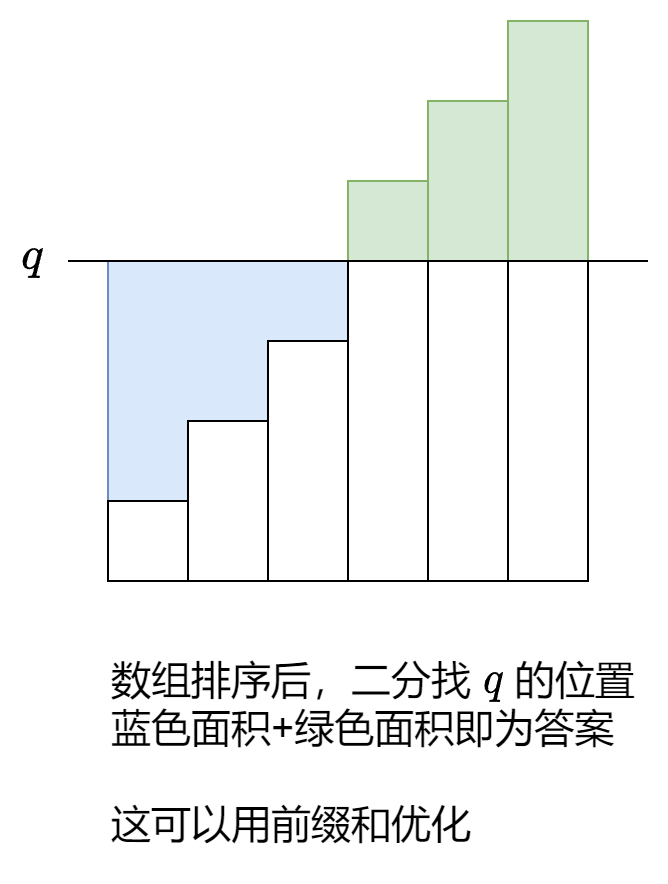

常用的数据结构
1. 枚举遍历
双变量：枚举右，维护左
例：1. 两数之和nums 和一个整数目标值 target，请你在该数组中找出和为目标值 target 的那两个 整数，并返回它们的数组下标。
解析：使用Hash表，枚举右，维护左边，使用hash表存储值和下表。对于每一个右r，查找hash表中是否有target-nums[r]。
1 2 3 4 5 6 7 8 9 10 11 12 13 14 15 16 17 18 19 class Solution { public : vector<int > twoSum (vector<int > &nums, int target) { int n = nums.size (); unordered_map<int , int > mp; for (int r = 0 ; r < n; r++) { auto it = mp.find (target - nums[r]); if (it != mp.end ()) { return {it->second, r}; } mp[nums[r]] = r; } return {-1 , -1 }; } };
多变量：枚举中间
例：2909. 元素和最小的山形三元组 II0 开始的整数数组 nums 。(i, j, k) 满足下述全部条件，则认为它是一个山形三元组 ：
i < j < knums[i] < nums[j] 且 nums[k] < nums[j]
请你找出 nums 中元素和最小 的山形三元组，并返回其元素和 。如果不存在满足条件的三元组，返回 -1 。
解析：使用数组存储前几个元素和后几个元素的最小值。枚举中间的j，当最小值满足山形三元组时更新ans。
1 2 3 4 5 6 7 8 9 10 11 12 13 14 15 16 17 18 19 20 21 22 23 24 25 26 27 28 29 30 31 32 33 class Solution { public : int minimumSum (vector<int > &nums) { int n = nums.size (); vector<int > min1 (n) ; int cur = nums[0 ]; min1[0 ] = cur; for (int i = 1 ; i < n; i++) { cur = min (cur, nums[i]); min1[i] = cur; } cur = nums[n - 1 ]; vector<int > min2 (n) ; min2[n - 1 ] = cur; for (int i = n - 2 ; i >= 0 ; i--) { cur = min (cur, nums[i]); min2[i] = cur; } int ans = INT_MAX; for (int j = 1 ; j < n - 1 ; j++) { if (min1[j - 1 ] < nums[j] && min2[j + 1 ] < nums[j]) ans = min (ans, nums[j] + min1[j - 1 ] + min2[j + 1 ]); } return (ans == INT_MAX) ? -1 : ans; } };
2. 前缀和
基础前缀和
若定义数组为a[n]，前缀和为s[n]，则有：
{ s [ 0 ] = 0 s [ 1 ] = a [ 0 ] s [ 2 ] = a [ 0 ] + a [ 1 ] … s [ n ] = a [ 0 ] + ⋯ + a [ n − 1 ] = 前n个数的和 \begin{cases}
s[0]=0\\
s[1]=a[0]\\
s[2]=a[0]+a[1]\\
\dots\\
s[n]=a[0]+\dots+a[n-1]&=\text{前n个数的和}
\end{cases}
⎩ ⎪ ⎪ ⎪ ⎪ ⎪ ⎪ ⎪ ⎨ ⎪ ⎪ ⎪ ⎪ ⎪ ⎪ ⎪ ⎧ s [ 0 ] = 0 s [ 1 ] = a [ 0 ] s [ 2 ] = a [ 0 ] + a [ 1 ] … s [ n ] = a [ 0 ] + ⋯ + a [ n − 1 ] = 前 n 个数的和
要计算a[n]中的第i到第j个数的和，则只需要计算：
∑ k = i − 1 j − 1 a [ k ] = s [ j ] − s [ i − 1 ] \sum_{k=i-1}^{j-1}a[k]=s[j]-s[i-1]
k = i − 1 ∑ j − 1 a [ k ] = s [ j ] − s [ i − 1 ]
即可。
例：560. 和为 K 的子数组 nums 和一个整数 k ，请你统计并返回 该数组中和为 k 的子数组的个数 。
解：使用前缀和。和为k的子数组意味着对于每个j，找出j之前的s[j]-k的个数。可以使用哈希表完成。注意：哈希表的更新一般在最后。 避免当前的值的插入影响查询哈希表。
1 2 3 4 5 6 7 8 9 10 11 12 13 14 15 16 17 18 19 20 21 22 23 24 25 26 class Solution { public : int subarraySum (vector<int > &nums, int k) { int sum[2 * 10001 ]; sum[0 ] = 0 ; int n = nums.size (); for (int i = 0 ; i < n; i++) { sum[i + 1 ] = sum[i] + nums[i]; } unordered_map<int , int > cnt; int ans = 0 ; for (int j = 0 ; j < n + 1 ; j++) { auto it = cnt.find (sum[j] - k); if (it != cnt.end ()) { ans += cnt[sum[j] - k]; } cnt[sum[j]]++; } return ans; } };
距离和
例：1685. 有序数组中差绝对值之和 nums 。
同时给你一个长度为 m 的整数数组 queries 。第 i 个查询中，你需要将 nums 中所有元素变成 queries[i] 。你可以执行以下操作 任意 次：
将数组里一个元素 增大 或者 减小 1 。m 的数组 answer ，其中 answer[i]是将 nums 中所有元素变成 queries[i] 的 最少 操作次数。
注意，每次查询后，数组变回最开始的值。
解：这是一个距离和的问题。求数组中的每个数相对于某个数的距离和。对于这类问题，通常采用前缀和加二分 的策略，如图所示：

在 左闭右开区间[l,r) 二分查找，搜索q的位置，确保找到第一个大于或等于q的位置l，这样 l 左边的元素都小于 q，右边的元素都大于或等于 q。
1 2 3 4 5 6 7 8 9 10 11 12 13 14 15 16 17 18 19 20 21 22 23 24 25 26 27 28 29 30 31 32 class Solution { public : typedef long long ll; vector<ll> minOperations (vector<int > &nums, vector<int > &queries) { ranges::sort (nums); int n = nums.size (); vector<ll> sum (n + 1 ) ; sum[0 ] = 0 ; for (int i = 0 ; i < n; i++) sum[i + 1 ] = sum[i] + nums[i]; vector<ll> ans; for (auto q : queries) { int l = 0 , r = n; while (l < r) { int mid = l + (r - l) / 2 ; if (nums[mid] < q) l = mid + 1 ; else if (nums[mid] >= q) r = mid; } ll left = (ll)q * l - sum[l]; ll right = sum[n] - sum[l] - (ll)q * (n - l); ans.push_back (left + right); } return ans; } };